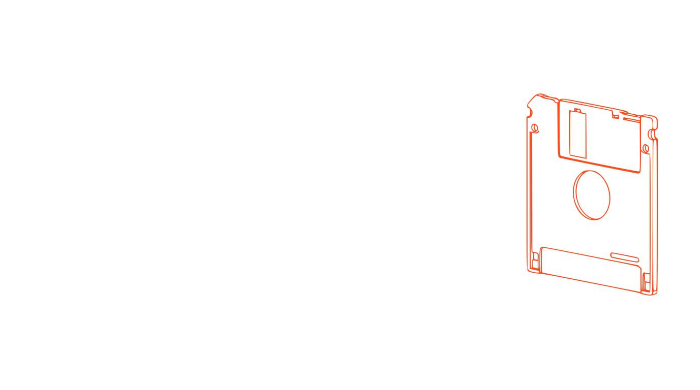
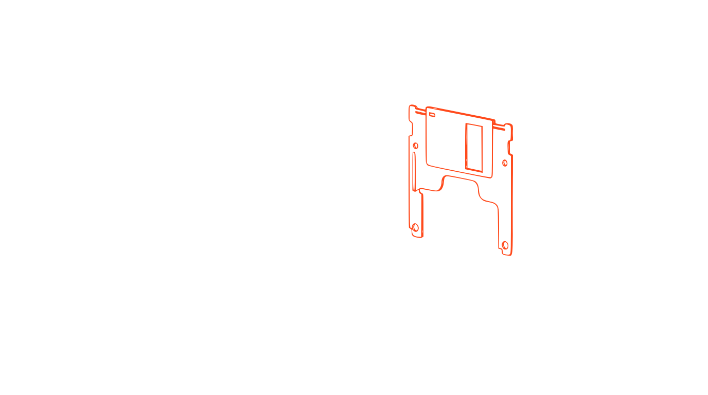
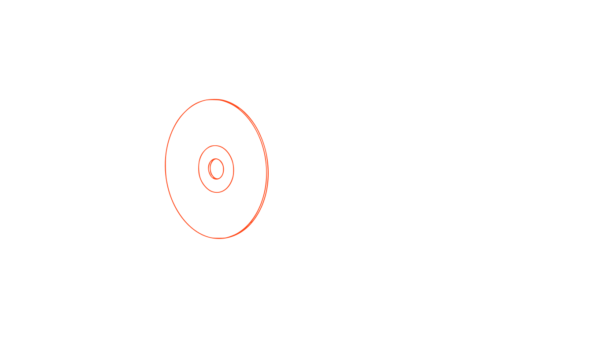
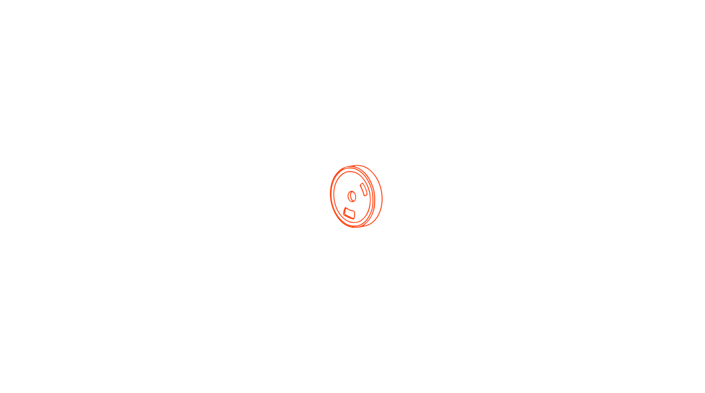
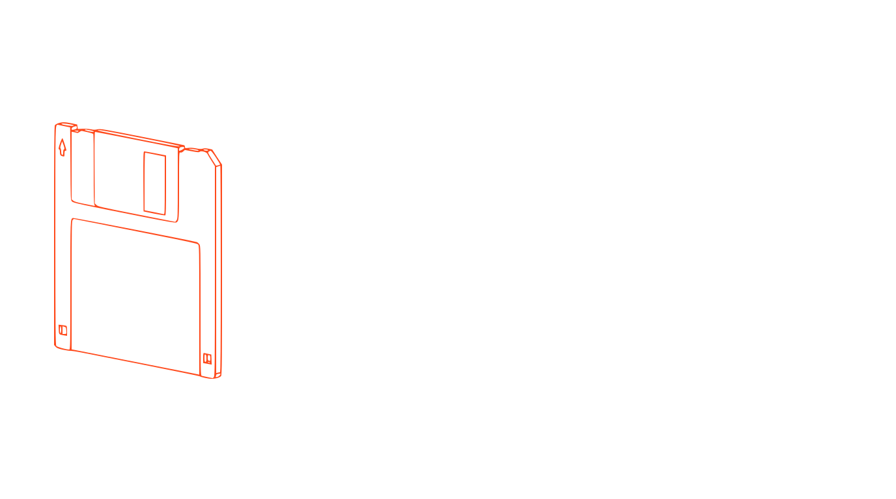

Effects Lab
William Montiel
Cursor background · computer / terminal ideas
Mueve el cursor por la página y prueba los fondos con los botones de abajo. Cada uno es una idea con enfoque de computadoras / terminal para reemplazar el fondo de puntos fósforo en las páginas internas (about, portfolio, contact). Prueba también en claro/oscuro con el botón de arriba a la derecha.
Disquette · assembly





Pasa el cursor → ensambla